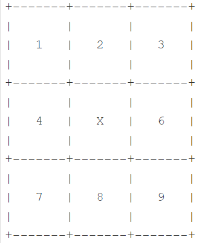
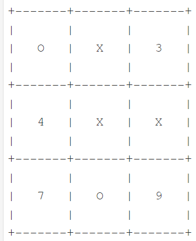
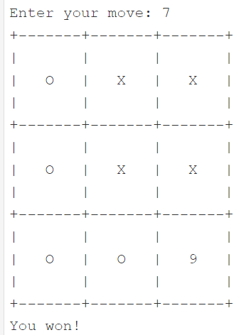

# def display_board(board):
# # The function accepts one parameter containing the board's current status
# # and prints it out to the console.
# def enter_move(board):
# # The function accepts the board's current status, asks the user about their move,
# # checks the input, and updates the board according to the user's decision.
# def make_list_of_free_fields(board):
# # The function browses the board and builds a list of all the free squares;
# # the list consists of tuples, while each tuple is a pair of row and column numbers.
# def victory_for(board, sign):
# # The function analyzes the board's status in order to check if
# # the player using 'O's or 'X's has won the game
# def draw_move(board):
# # The function draws the computer's move and updates the board.Фінальний проєкт І
Документ зроблено за допомогою Quarto
Мета:
- вдосконалення навичок у використанні Python для розв’язання складних завдань;
- інтеграція методів програмування в одну програму, що складається з багатьох різних елементів.
Примітка. Завдання з матеріалів python institute.. Завдання є фінальним проєктом, завершує ч. 1 рівня “Essential”, після чого можна пройти сертифікаційний тест.
Постановка завдання
Ваше завдання - написати просту програму, яка вдає, ніби грає з користувачем у хрестики-нуліки. Щоб вам було простіше, ми вирішили спростити гру. Ось наші припущення:
- комп’ютер (тобто Ваша програма) повинен грати у гру, використовуючи ‘X’;
- користувач (наприклад, Ви) повинен грати в гру, використовуючи символи ‘O’;
- перший хід належить комп’ютеру - він завжди поміщає свій перший ‘X’ у середину дошки;
- всі квадрати пронумеровані рядок за рядком, починаючи з 1 (див. приклад сеансу нижче для довідки)
- користувач робить свій хід, вводячи номер обраного ним квадрата - число має бути дійсним, тобто. воно має бути цілим числом, воно має бути більше 0 і менше 10 і воно не може вказувати на поле, яке вже зайняте;
- програма перевіряє, чи закінчена гра - є чотири можливі варіанти: гра повинна продовжуватися, гра закінчується нічиєю, Ви виграєте або комп’ютер виграє;
- комп’ютер відповідає
ходом і перевірка повторюється; * не застосовуйте штучний інтелект у будь-якій формі – випадковий вибір поля, зроблений комп’ютером, досить добрий для гри.
Приклад сеансу роботи з програмою може виглядати так: 






Вимоги
Реалізуйте такі функції:
- дошка повинна зберігатися як список з трьох елементів, у той час як кожен елемент є ще одним список з трьох елементів (внутрішні списки представляють рядки), так що всі квадрати можуть бути доступні з використанням наступного синтаксису:
board[row][column]
- кожен із елементів внутрішнього списку може містити
'O','X'або цифру, що становить номер квадрата (такий квадрат вважається вільним) - зовнішній вигляд дошки повинен бути таким самим, як у прикладі.
Отримати випадкове ціле число можна за допомогою функції Python під назвою randrange(). У наведеному нижче прикладі програми показано, як використовувати її (програма виводить десять випадкових чисел від 0 до 8).
Примітка: інструкція from-import забезпечує доступ до функції randrange, визначеної у зовнішньому модулі Python, що викликається random.
from random import randrange
for i in range(10):
print(randrange(8))Завдання для самостіної роботи
Виконати завдання.
Створити файл project_1_StudentLastName.py з написаним кодом.
Закомітити файл у локальний репозиторій.
Відправити (“запушити”) поточну версію Git-проєкта у віддалений репозиторій на GitHub.
Звіт має складатися з файлу (за основу взяти цей Python-зошит)
project_1_StudentLastName.ipynb. (Можливі якісь додакові файли)
Виконання завдання
from random import randrange
def create_board():
"""Створює початкову дошку гри."""
return [[1, 2, 3], [4, 5, 6], [7, 8, 9]] # Номери клітинок
def display_board(board):
"""Відображає поточний стан дошки."""
print("\nДошка:")
for row in board:
print(" | ".join(str(x) for x in row))
print("-" * 13)
def enter_move(board, player_sign):
"""Запитує користувача про його хід, перевіряє ввід і оновлює дошку."""
while True:
user_input = input("Ваш хід (введіть номер клітинки): ")
if not user_input.isdigit() or int(user_input) not in range(1, 10):
print("Неправильний ввід. Будь ласка, спробуйте ще раз.")
continue
move = int(user_input)
row, col = divmod(move - 1, 3)
if board[row][col] in ['X', 'O']:
print("Ця клітинка вже зайнята. Спробуйте ще раз.")
continue
board[row][col] = player_sign # Оновлюємо дошку
break
def make_list_of_free_fields(board):
"""Повертає список вільних клітин у вигляді кортежів (рядок, стовпець)."""
free_fields = []
for i in range(3):
for j in range(3):
if isinstance(board[i][j], int): # Якщо клітинка вільна
free_fields.append((i, j))
return free_fields
def victory_for(board, sign):
"""Перевіряє, чи виграв гравець з 'O' або 'X'."""
# Перевірка рядків, стовпців та діагоналей
for i in range(3):
if board[i][0] == board[i][1] == board[i][2] == sign:
return True
if board[0][i] == board[1][i] == board[2][i] == sign:
return True
if board[0][0] == board[1][1] == board[2][2] == sign:
return True
if board[0][2] == board[1][1] == board[2][0] == sign:
return True
return False # Переможця не знайдено
def draw_move(board, computer_sign):
"""Випадковим чином обирає вільну клітинку для ходу комп'ютера."""
free_fields = make_list_of_free_fields(board)
if free_fields: # Якщо є вільні клітинки
row, col = free_fields[randrange(len(free_fields))]
board[row][col] = computer_sign # Комп'ютер ставить свій знак
def print_history(history):
"""Відображає історію ходів гри."""
print("\nІсторія ходів:")
for move in history:
print(move)
def main():
"""Основна функція гри."""
# Запит користувача про ім'я
player_name = input("Введіть ваше ім'я: ")
# Запит на вибір символа
while True:
player_sign = input("Виберіть ваш символ ('X' або 'O'): ").upper()
if player_sign in ['X', 'O']:
break
else:
print("Неправильний вибір. Будь ласка, виберіть 'X' або 'O'.")
computer_sign = 'O' if player_sign == 'X' else 'X' # Призначаємо символ комп'ютера
wins = 0
losses = 0
draws = 0
while True:
board = create_board() # Створення дошки
display_board(board)
# Перший хід комп'ютера
board[1][1] = computer_sign # Комп'ютер ставить свій знак у центр
display_board(board)
history = [] # Історія ходів
while True:
enter_move(board, player_sign)
history.append(f"{player_name} ввів: {player_sign} на позиції {board}")
display_board(board)
if victory_for(board, player_sign):
print(f"Вітаємо, {player_name}! Ви виграли!")
wins += 1
break
if not make_list_of_free_fields(board):
print("Нічия!")
draws += 1
break
draw_move(board, computer_sign)
history.append(f"Комп'ютер ввів: {computer_sign} на позиції {board}")
display_board(board)
if victory_for(board, computer_sign):
print(f"На жаль, {player_name}, ви програли!")
losses += 1
break
print_history(history) # Виведення історії ходів
# Статистика
print("\nСтатистика:")
print(f"Перемоги: {wins}, Поразки: {losses}, Нічії: {draws}")
# Запит на нову гру
play_again = input("\nБажаєте зіграти ще раз? (так/ні): ").strip().lower()
if play_again != 'так':
break
if __name__ == "__main__":
main()Введіть ваше ім'я: Кирило
Виберіть ваш символ ('X' або 'O'): x
Дошка:
1 | 2 | 3
-------------
4 | 5 | 6
-------------
7 | 8 | 9
-------------
Дошка:
1 | 2 | 3
-------------
4 | O | 6
-------------
7 | 8 | 9
-------------Ваш хід (введіть номер клітинки): 1
Дошка:
X | 2 | 3
-------------
4 | O | 6
-------------
7 | 8 | 9
-------------
Дошка:
X | O | 3
-------------
4 | O | 6
-------------
7 | 8 | 9
-------------Ваш хід (введіть номер клітинки): 4
Дошка:
X | O | 3
-------------
X | O | 6
-------------
7 | 8 | 9
-------------
Дошка:
X | O | 3
-------------
X | O | 6
-------------
O | 8 | 9
-------------Ваш хід (введіть номер клітинки): 8
Дошка:
X | O | 3
-------------
X | O | 6
-------------
O | X | 9
-------------
Дошка:
X | O | 3
-------------
X | O | 6
-------------
O | X | O
-------------Ваш хід (введіть номер клітинки): 6
Дошка:
X | O | 3
-------------
X | O | X
-------------
O | X | O
-------------
Дошка:
X | O | O
-------------
X | O | X
-------------
O | X | O
-------------
На жаль, Кирило, ви програли!
Історія ходів:
Кирило ввів: X на позиції [['X', 2, 3], [4, 'O', 6], [7, 8, 9]]
Комп'ютер ввів: O на позиції [['X', 'O', 3], [4, 'O', 6], [7, 8, 9]]
Кирило ввів: X на позиції [['X', 'O', 3], ['X', 'O', 6], [7, 8, 9]]
Комп'ютер ввів: O на позиції [['X', 'O', 3], ['X', 'O', 6], ['O', 8, 9]]
Кирило ввів: X на позиції [['X', 'O', 3], ['X', 'O', 6], ['O', 'X', 9]]
Комп'ютер ввів: O на позиції [['X', 'O', 3], ['X', 'O', 6], ['O', 'X', 'O']]
Кирило ввів: X на позиції [['X', 'O', 3], ['X', 'O', 'X'], ['O', 'X', 'O']]
Комп'ютер ввів: O на позиції [['X', 'O', 'O'], ['X', 'O', 'X'], ['O', 'X', 'O']]
Статистика:
Перемоги: 0, Поразки: 1, Нічії: 0
Бажаєте зіграти ще раз? (так/ні): ніОсновні можливості які реалізовано в проекті
Основні можливості:
Створення дошки гри:
Дошка гри представлена як двовимірний список, що складається з трьох рядків і трьох стовпців. Кожна клітинка спочатку містить номер, що вказує на її позицію (від 1 до 9). Відображення дошки:
Дошка виводиться на екран в читабельному форматі, що дозволяє користувачу легко бачити поточний стан гри. Вибір символа:
Користувач може вибрати, яким символом грати: ‘X’ або ‘O’. Символ комп’ютера автоматично призначається в залежності від вибору користувача. Введення ходу:
Користувач вводить номер клітинки, в яку хоче поставити свій символ. Програма перевіряє правильність введеного значення і чи не зайнята ця клітинка. Перевірка перемоги:
Після кожного ходу програма перевіряє, чи виграв користувач або комп’ютер. Перемога перевіряється за рядками, стовпцями та діагоналями. Ходи комп’ютера:
Комп’ютер робить свій хід, випадковим чином обираючи вільну клітинку. Він не використовує штучний інтелект, а просто ставить свій символ в доступну позицію.
Історія ходів:
- Програма зберігає історію всіх ходів, яка виводиться в кінці гри. Це дозволяє користувачу бачити, які ходи були зроблені під час гри.
Статистика:
Ведеться статистика перемог, поразок та нічий. Після закінчення гри користувач бачить, скільки разів він виграв, програв або зіграв внічию. Можливість повторної гри:
Після закінчення гри програма запитує, чи хоче користувач зіграти ще раз. Якщо так, то гра починається заново.
References
- Anaconda (Python distribution)
- Conda
- Pro Git Book
- OpenEDG Python Institute
- Cisco. Networking Academy
- Научно-издательская система Quarto
- Codecademy - Learn Python
- Coursera - Python for Everybody
- edX - Introduction to Computer Science and Programming Using Python
- Real Python
- LeetCode
- W3Schools - Python Tutorial
- Kaggle - Python Course
- Python.org